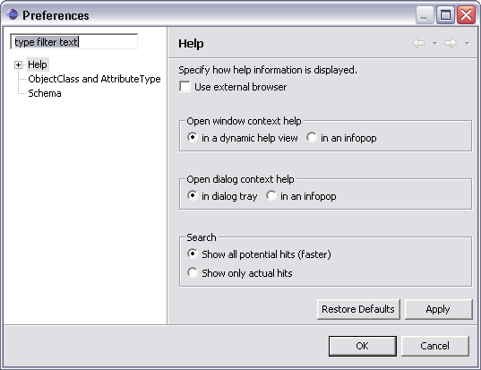

On the Help preferences page, you can indicate how to display help information.
| Option |
Description |
Default |
|---|---|---|
| Use external browsers | If embedded web browser is supported on your system, help window uses an embedded help browser to display help contents, whenever possible, and this option is available. Select it, to force help to use external browsers. Use "Web Browser" preference page to select browser to use. | Off |
| Open window context help | This option allows you to determine whether the window context help will be opened in a dynamic help view or in an infopop. | in a dynamic help view |
| Open dialog context help | This option allows you to determine whether the dialog context help will be opened in a dynamic help section of help view or in an infopop. | in a dynamic help window |
| Help view document open mode | This option allows you to determine whether the documents selected in the help view will be opened in place or in the editor area. | Open in place |
Here is what the Help preferences page looks like:

Note: Selection performed on this page can affect how the help view is presented. If the selected browser is not fully compatible with Internet Explorer or Mozilla, or has JavaScript disabled, the help view shown in the browser might be a simplified version.